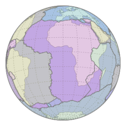

Africa is the second largest continent after asia and also the second most populous country. Africa is rich in natural resources but is least rich in wealth and income because of the cold war and the colonization by Europe. The median age of Africa was around 20 years in 2012 when the other countries were at 30 years.
The african plate is one of the 7 major plates. Africa covers around 20% of the total land area of earth and 6% of total area of Earth. The climate of Africa is mostly desert and grasslands. Around 60% of area is desert and grasslands in Africa. The highest recorded temperature in the world was in Libya at 58°C.
The Scramble for Africa, also called the Partition of Africa, or the
Conquest of Africa, was the invasion, occupation, division, and
colonization of most of Africa by seven Western European powers during a
short period known to historians as the New Imperialism (between 1881 and
1914). The 10 percent of Africa that was under formal European control in
1870 increased to almost 90 percent by 1914, with only Ethiopia
(Abyssinia) and Liberia remaining independent, though Ethiopia would later
be invaded and occupied by Italy in 1936.
Although it has abundant natural resources, Africa remains the world's poorest and least-developed continent (other than Antarctica), the result of a variety of causes that may include corrupt governments that have often committed serious human rights violations, failed central planning, high levels of illiteracy, lack of access to foreign capital, and frequent tribal and military conflict (ranging from guerrilla warfare to genocide). Its total nominal GDP remains behind that of the United States, China, Japan, Germany, the United Kingdom, India and France. According to the United Nations' Human Development Report in 2003, the bottom 24 ranked nations (151st to 175th) were all African.